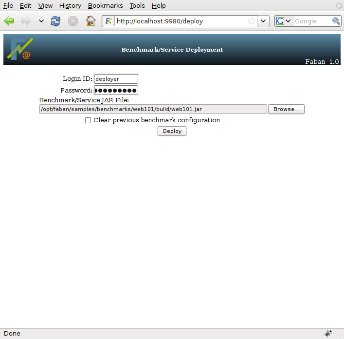

The Faban harness is exactly what it says it is - a harness for
automation of
benchmark runs. Without benchmarks deployed in the harness, it can
barely do anything by itself. In order to demonstrate all the
functionality of the Faban harness, we need to deploy a benchmark. For
this purpose, we'll deploy the very simple benchmark sample called
"Web101" that is distributed as part of the Faban kit.
You need to have Faban installed to
continue
following the guide. Please refer to Installation and Getting Started
to get
Faban installed and properly set up.
Please note that we do not discuss the
benchmark
deploy image and how to create it right here. This topic is covered in
detail in the Faban
Harness
Developers Guide in the deployment section.
For now we will just use the deploy
image in
$FABAN_HOME/samples/web1/build/web1.jar. There are three ways to deploy
a benchmark:
You can use a web browser to upload the
benchmark deploy
image (jar file). Point your web browser to
http://<faban_host>:9980/deploy. Then either click browse
to
select the jar file or type the path to the jar file name. Finally,
click deploy to upload the jar file. The following picture illustrates
the deploy screen.

Alternatively, you can directly copy the
deploy jar file
into the $FABAN_HOME/benchmarks directory of the master. The jar file
will be automatically deployed the next time Faban searches for
deployed benchmarks.
The last way to deploy a benchmark, Faban
provides an ant
deploy task to deploy a benchmark into the Faban harness as part of the
build and test cycle. This option is designed for use by developers and
is discussed in the Faban
Harness
Developers Guide.
For integrity of the benchmark runs, Faban will refuse to deploy if 1)there is a previous deployment of the same benchmark and 2) a run for this benchmark is scheduled/pending or in progress. In this case, you will have two choices:
If you deployed by copying the deploy jar file into
$FABAN_HOME/benchmarks directory, the new jar file will not get
deployed until these two conditions are met.